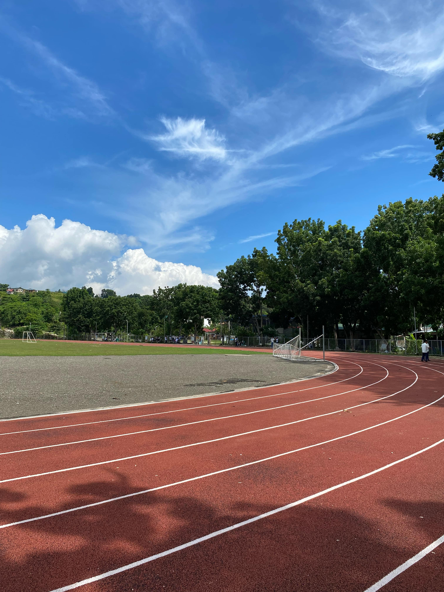
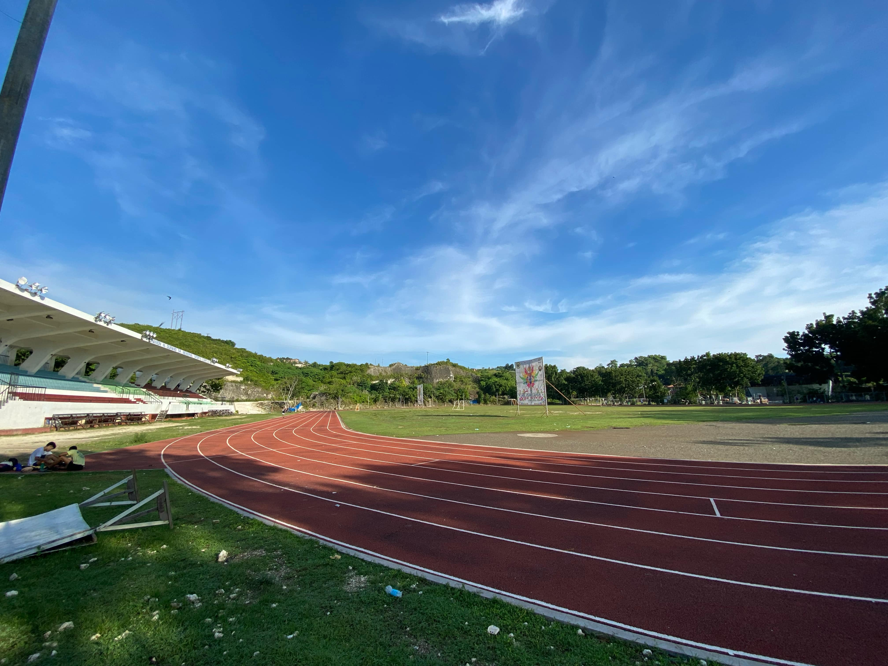

The Cebu Technological University (CTU) Danao Oval stands as a vibrant hub for sports, fitness, and community engagement within the university’s Danao campus. Serving both the student body and the broader local community, the oval is a well-maintained space designed for a variety of physical activities, from track and field events to fitness programs and team sports practices. It plays a vital role in fostering a culture of physical wellness among students and faculty, offering a space where they can unwind, train, and compete. Whether it’s an early morning jog, a university-wide sports event, or an informal gathering for outdoor games, the CTU Danao Oval provides a versatile environment that accommodates different athletic needs. The track, designed to meet the demands of runners and athletes, is often the site of university competitions, fitness runs, and other extracurricular activities. Beyond its function as a sports facility, the oval also serves as a gathering point for community events and celebrations, reflecting its importance not just to the university, but to the surrounding city of Danao as well. Its open, green space offers a refreshing break from academic life and promotes active lifestyles, making it an integral part of the CTU Danao campus experience.
CTU Danao Oval
Published on October 07 2024

